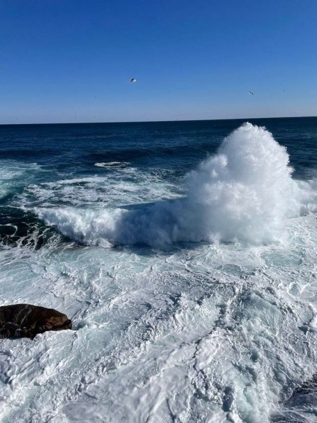
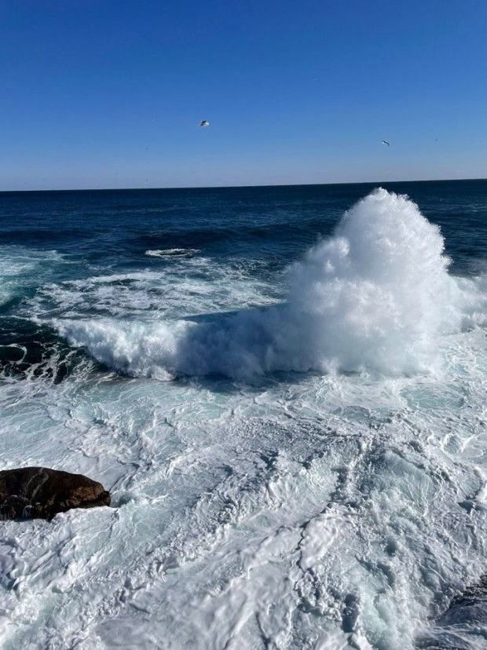

BMW f82 M4 내 인생의 드림카
 

BMW M4는 2014년에 출시된 4 시리즈를 기반의 고성능 쿠페이다. 원래 3 시리즈는 컴팩트 세단과 쿠페 등 2가지의 차체 형식을 발매하였기 때문에 BMW M에서도 M3라는 차명 아래에 쿠페, 세단, 컨버터블을 생산했었다. 하지만 BMW에서 쿠페와 컨버터블을 4 시리즈로 독립시킴에 따라 기존의 M3도 세단인 M3와 쿠페 및 컨버터블인 M4로 분리되었다. 4 시리즈 그란 쿠페가 출시됨에 따라 자연스레 M4 그란 쿠페도 출시되지 않느냐는 예상이 있었으나, BMW측에서는 그란 쿠페의 생산 공장이 다르기 때문에 비효율성을 이유로 M4 그란 쿠페는 생산하지 않는다고 발표했다. 따라서 이전 세대 M3(E92)는 엄밀하게 따지면 M4로 혈통이 이어진다고 할 수 있다.